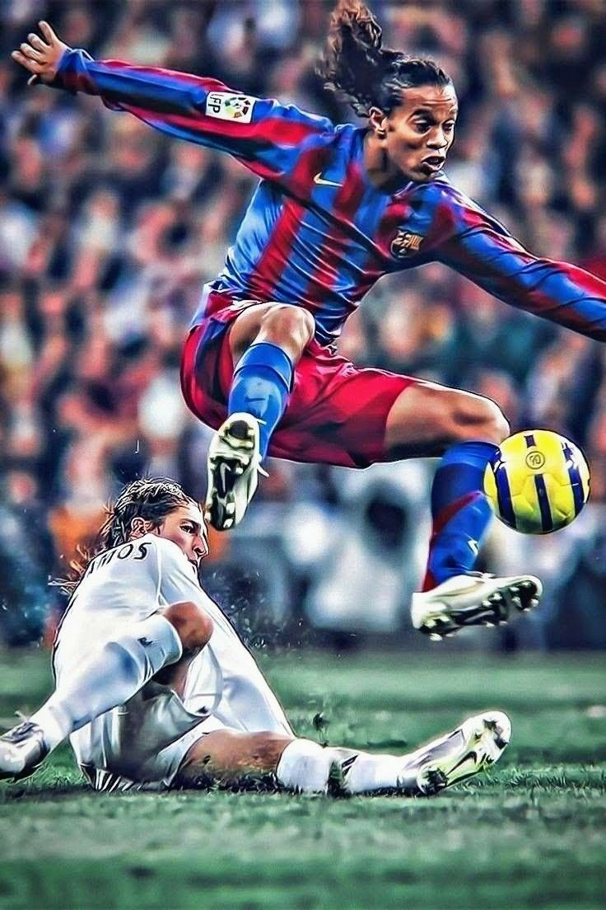

Ronaldinho Gaúcho, nascido em 1980, em Porto Alegre, é um dos maiores ídolos do futebol mundial. Revelado pelo Grêmio, encantou desde cedo com seus dribles, criatividade e alegria em campo.
Em 2001, transferiu-se para o PSG e, logo depois, brilhou no Barcelona, onde viveu seu auge. Conquistou duas La Ligas, uma Champions League e foi eleito Melhor Jogador do Mundo pela FIFA em 2004 e 2005.
Pela Seleção Brasileira, marcou época. Ganhou a Copa América (1999), a Copa do Mundo (2002) e a Copa das Confederações (2005). Seu gol de falta contra a Inglaterra, na Copa de 2002, é lembrado até hoje.
Jogou também por Milan, Flamengo, Atlético Mineiro (onde ganhou a Libertadores de 2013), Querétaro e Fluminense, encerrando sua carreira oficialmente em 2018.
Além dos títulos, Ronaldinho ficou conhecido por sua habilidade única e estilo irreverente. Foi o único jogador da história a vencer Copa do Mundo, Libertadores, Champions League e Ballon d'Or. Fora de campo, teve passagens conturbadas, mas seu legado no futebol arte permanece intacto. Ícone global, ele transformou o jogo em espetáculo e inspirou milhões com seu sorriso e talento.
Ronaldinho Gaúcho, cuyo nombre completo es Ronaldo de Assis Moreira, es uno de los futbolistas más talentosos y carismáticos de la historia del fútbol. Nació el 21 de marzo de 1980 en Porto Alegre, Brasil. Conocido por su estilo de juego espectacular, su habilidad para el regate, la visión de juego y su capacidad para hacer magia con el balón, Ronaldinho dejó una marca imborrable en los equipos por los que pasó, así como en la selección de Brasil.
Inicios y Ascenso en el Fútbol
Ronaldinho comenzó a jugar fútbol desde muy joven en su ciudad natal. Su hermano más viejo, Roberto Assis, fue clave en su desarrollo futbolístico, siendo también un futbolista que influyó en su carrera. Ronaldinho empezó en el Grêmio, un club brasileño donde mostró su talento desde temprana edad.
En 1998, a los 18 años, hizo su debut profesional con Grêmio, pero su verdadero despegue fue cuando se unió a Paris Saint-Germain (PSG) en 2001, a pesar de que ya era reconocido en Brasil. Su paso por el PSG fue breve pero dejó claro que estaba destinado a grandes cosas.
Barcelona: El Época Dorada
Su paso más famoso y exitoso en los clubes fue su llegada al FC Barcelona en 2003, tras su paso por el PSG. En el Barça, se convirtió en la gran estrella y fue clave en la renovación de un equipo que no vivía sus mejores momentos.
Durante su tiempo en Barcelona (2003-2008), Ronaldinho ganó 2 La Ligas (2004-05 y 2005-06), una Champions League (2005-06), y varios títulos individuales, incluyendo el Balón de Oro en 2005. Su magia en el campo, sus dribles impredecibles, y su carisma lo convirtieron en un ídolo mundial. No solo ganaba partidos, sino que también ofrecía espectáculo, haciendo de cada juego un evento.
Una de sus jugadas más recordadas fue un gol frente al Real Madrid en el Santiago Bernabéu en 2005, donde dejó atrás a varios defensores y anotó un gol que fue ovacionado incluso por los hinchas rivales.
Selección de Brasil
Ronaldinho también fue una pieza clave en la Selección de Brasil. Fue parte fundamental en la Copa del Mundo de 2002, donde Brasil se coronó campeón. Durante ese torneo, Ronaldinho se destacó no solo por su juego en general, sino también por su famoso gol de tiro libre contra Inglaterra en los cuartos de final, un gol que pasó a la historia.
Además, participó en varias ediciones de la Copa América y la Copa Confederaciones, consolidándose como uno de los mejores jugadores de su generación.
El Declive y Últimos Años
A pesar de su éxito temprano, el rendimiento de Ronaldinho comenzó a decaer tras su salida del Barcelona en 2008. Después de un breve paso por el AC Milan (2008-2011), Ronaldinho continuó su carrera en clubes más modestos, como el Flamengo y el Atlético Mineiro en Brasil, antes de retirarse del fútbol profesional en 2015.
A lo largo de su carrera, Ronaldinho también vivió momentos difíciles, incluyendo problemas fuera del campo, como su arresto en Paraguay en 2020 por ingresar al país con documentos falsificados. A pesar de estos altibajos, su legado en el fútbol se mantiene intacto.
Estilo de Juego y Legado
El estilo de juego de Ronaldinho se caracterizó por su increíble habilidad técnica, su capacidad para hacer regates, su visión de juego excepcional y su capacidad para realizar pases y trucos impredecibles. En sus mejores momentos, parecía tener un control total sobre el balón, y su sonrisa característica en el campo de juego lo convirtió en un símbolo de alegría y entretenimiento.
Ronaldinho fue un jugador que hizo que el fútbol fuera "divertido" de nuevo, y siempre se le recordará por su actitud relajada y su enfoque libre del juego.
A pesar de que no ganó tantos títulos a nivel de selecciones como otros grandes de la historia, como Pelé o Zico, su talento fue incuestionable, y su influencia sigue presente. Fue uno de los jugadores que más influyó en la época dorada del fútbol moderno, y su nombre será recordado por generaciones de fanáticos.
Reconocimientos:
Balón de Oro (2005)
FIFA World Player en dos ocasiones (2004 y 2005)
Campeón de la Copa del Mundo 2002 con Brasil
Campeón de la UEFA Champions League con Barcelona (2005-06)
2 Ligas españolas con Barcelona
Y muchos otros títulos nacionales e internacionales.
A pesar de los altibajos en su carrera, Ronaldinho sigue siendo considerado uno de los jugadores más talentosos y carismáticos de todos los tiempos.

© 2025 - Todos os direitos reservados.